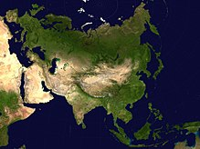
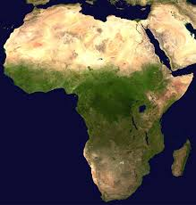
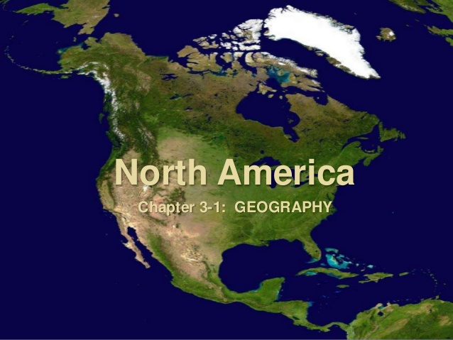
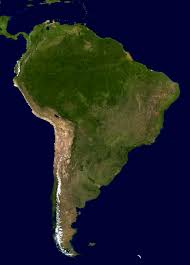
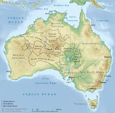
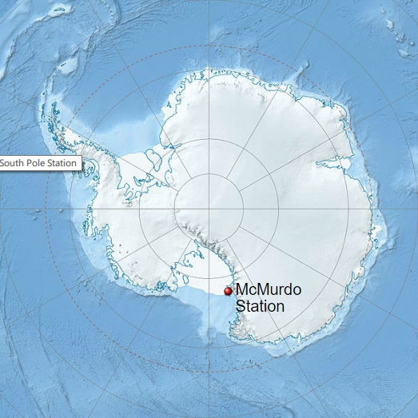
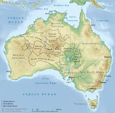
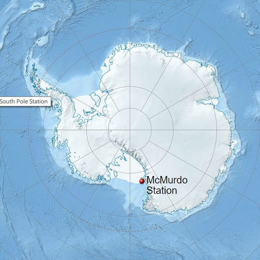

Евразия
Природа Евразии
Природные зоны
Распространённые растения
- Полярный мак
- Карликовая берёза
- Мхи и лишайники
- Дуб
- Бук
- Клён
- Берёза
- Ковыль
- Полынь
- Саксаул
- Папоротник
- Ель
- Сосна
- Лиана
- Барбарис
- Кедр
Распространённые животные
- Белый медведь
- Песец
- Лось
- Олень
- Бурый медведь
- Суслик
- Сурок
- Верблюд
- Уж
- Зубр
- Орангутанг
- Тигр
- Ондатра
- Панда
- Кобра
- Индийский слон

Африка
Природа Африки
Природные зоны
Распространённые растения
- Баобаб
- Верблюжья колючка
- Кактус
- Бананы
- Мангры
- Зонтичная акация
- Алоэ
- Кокосовая пальма
- Финиковая пальма
- Саксаул
- Оливковое дерево
Распространённые животные
- Антилопа канна
- Слон
- Лев
- Страус
- Крокодил
- Жираф
- Бегемот
- Верблюд
- Горилла
- Носорог
- Гиена
- Зебра
- Лемур
- Газель
- Муха це-це
- Фенек

Северная Америка
Природа Северной Америки
Природные зоны
Распространённые растения
- Секвойя
- Карликовая берёза
- Мхи и лишайники
- Дуб
- Карибская сосна
- Клён
- Берёза
- Пальма
- Кактус
- Папоротник
- Ель
- Сосна
Распространённые животные
- Белый медведь
- Песец
- Лось
- Олень вапити
- Чёрный медведь
- Морж
- Овцебык
- Койот
- Енот
- Бизон
- Скунс
- Ягуар
- Гризли
- Лемминг
- Пума
- Рысь

Южная Америка
Природа Южной Америки
Природные зоны
Распространённые растения
- Пальма
- Араукария
- Кактус
- Орхидея
- Шоколадное дерево
- Дынное дерево
- Ананас
- Виктория-регия
- Папоротник
- Лиана
Распространённые животные
- Тукан
- Ленивец
- Пума
- Опоссум
- Альпака
- Броненосец
- Ягуар
- Анаконда
- Нутрия
- Муравьед
- Ревун
- Вискаша
- Страус нанду
- Тапир
- Коллибри
- Пиранья

Австралия
Природа Австралии
Природные зоны
Австралия - самый маленький материк. Его природа так разнообразна, что коренные животные не живут на других материках. Почти 85% материка - пустыни, есть саванны и горы.
Распространённые растения
- Мангры
- Кораллы
- Эвкалипт
- Зонтичная акация
- Бутылочное дерево
Распространённые животные
- Кенгуру
- Динго
- Страус эму
- Коала
- Лирохвост
- Киви
- Ехидна
- Утконос
- Казуар
- Гаттерия
- Сцинк
- Золотоволосый пингвин
- Кашалот

Антарктида
Природа Антарктиды
Природные зоны
Антарктида - настолько холодный материк, что на нём нет никакой растительности. Здесь только льды.
Распространённые животные
- Пингвин
- Белокровная щука
- Поморник
- Баклан

Природные зоны
Распространённые растения
- Мангры
- Кораллы
- Эвкалипт
- Зонтичная акация
- Бутылочное дерево
Распространённые животные
- Кенгуру
- Динго
- Страус эму
- Коала
- Лирохвост
- Киви
- Ехидна
- Утконос
- Казуар
- Гаттерия
- Сцинк
- Золотоволосый пингвин
- Кашалот

Природные зоны
Распространённые животные
- Пингвин
- Белокровная щука
- Поморник
- Баклан
